캐주얼 게임 클라이언트 개발 · 설계와 최적화, 그리고 팀이 빨리 일하게 만드는 시스템.
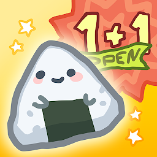
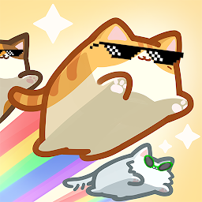
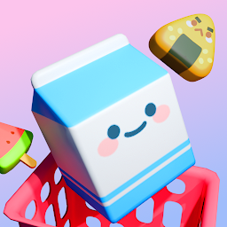
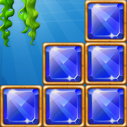
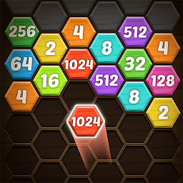
+16 titles퍼즐 · 머지 · 디펜스 등 캐주얼 게임 23종을 출시까지 만들며, 출시 후 최적화 · 유지보수 · 운영 핸드오프까지 경험했습니다. 매번 반복되는 부분은 공통 시스템으로 정리해 팀 생산성을 높여왔습니다.
아키텍처와 판단은 직접 정하고, 구현 속도는 AI 에이전트로 끌어올리되, AI 출력은 코드리뷰 · 검증을 반드시 거칩니다.
CLAUDE.md로 맥락 사전 정의
설계 결정은 사람이
AI 출력은 검증 후 반영
빠른 피드백 루프
DI (VContainer) 3 Layer
MVC · Command · Factory · Pool 조합
Profiler 기반 병목 진단 · 최적화
23종 글로벌 출시 (5장르)
0 → 10 팀빌딩
사내 시스템 · 온보딩 구축
규칙·금지패턴 직접 정의(CLAUDE.md)
외부 에이전트 도구로 구현 자율화
출력은 검증 · 리뷰 필수
전략 퍼즐 · Unity 6 · 본인 = 아키텍처 리드 · 코어 · 최적화 · SDK · 출시 후 지표 미달로 서비스 종료 → 코드 · 설계 쇼케이스
왜 — Burst+Job으로 BFS를 메인스레드 밖에서 돌리고, Allocator.Temp NativeContainer를 Execute 끝에서 직접 Dispose해 GC/누수 0.
WalkableMap은 [ReadOnly]로 안전 보장.
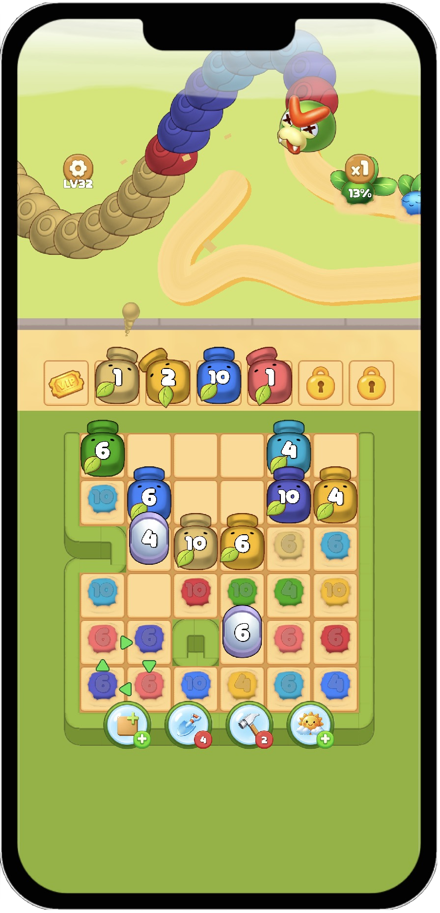
[BurstCompile]
public struct PathFindJob : IJob
{
public int GridWidth;
public int GridHeight;
[ReadOnly] public NativeArray<bool> WalkableMap;
public int2 Start;
public int2 Goal;
public NativeList<int2> PathResult;
public void Execute()
{
PathResult.Clear();
if (!IsValid(Start) || !IsValid(Goal)) return;
var startIndex = ToIndex(Start);
var goalIndex = ToIndex(Goal);
if (!WalkableMap[startIndex] ||
!WalkableMap[goalIndex]) return;
var queue = new NativeQueue<int2>(Allocator.Temp);
var visited = new NativeHashSet<int>(128, Allocator.Temp);
var cameFrom = new NativeHashMap<int,int>(128, Allocator.Temp);
queue.Enqueue(Start);
visited.Add(startIndex); while (queue.TryDequeue(out int2 cur))
{
if (cur.x == Goal.x && cur.y == Goal.y) break;
for (var i = 0; i < 4; i++)
{
var nb = cur + GridUtility.FourDirections[i];
if (!IsValid(nb)) continue;
var ni = ToIndex(nb);
if (visited.Contains(ni)) continue;
if (!WalkableMap[ni]) continue;
visited.Add(ni);
queue.Enqueue(nb);
cameFrom[ni] = ToIndex(cur);
}
}
// cameFrom 역추적으로 PathResult 복원 (생략)
// Allocator.Temp 컨테이너는 끝에서 직접 해제 → 누수 0
queue.Dispose();
visited.Dispose();
cameFrom.Dispose();
}
}왜 — 매 프레임 읽는 카운트를 dirty-flag로 캐시해 List 순회를 변동 시점에만 수행, 색상 인덱스도 재사용 List에 담아 할당 0. 뷰는 Pool<T>로 Get/Release 재사용해 Instantiate/Destroy GC를 제거.
갤럭시 A SeriesPoco저전력모드 · 60fps 유지
// 매 프레임 호출되는 카운트를 dirty-flag로 캐싱
private readonly List<int> _colorCache = new(); // GC 0
private int _cachedCount;
private bool _isDirty = true;
public int ActiveSegmentCount
{
get
{
if (_isDirty) // 변경됐을 때만 재계산
{
_cachedCount = 0;
foreach (var seg in _segments)
if (!seg.IsDestroyed) _cachedCount++;
_isDirty = false;
}
return _cachedCount; // 평소엔 캐시 반환
}
}
// 세그먼트 변동 시점에만 호출
private void Invalidate() => _isDirty = true;// Pool<T> : 활성 인스턴스 추적 + 재사용
// (new 대신 Get / Release)
[MethodImpl(MethodImplOptions.AggressiveInlining)]
public T Get()
{
var i = _pool.Get();
_activeInstances.Add(i);
return i;
}
[MethodImpl(MethodImplOptions.AggressiveInlining)]
public void Release(T instance)
{
if (!instance) return;
_activeInstances.Remove(instance);
_pool.Release(instance); // 파괴 대신 풀로 반환
}실제 WigglePuzzle 클라이언트 코드 — 각 카드의 코드 보기를 누르면 전체 코드가 열립니다 (GitHub 비공개 → 코드는 캡처/텍스트로 증빙, 라인 단위 설명 가능).
Initialize / Tick / Dispose 대칭 라이프사이클로 구독을 정확히 해제 → 누수 차단.
Factory(인터페이스) / Controller(구현) / EntryPoint 등록 → 생성 · 실행 책임 일원화.
Model은 new, View는 Pool에서 Get + DI 주입, Release로 반납 → Instantiate 비용 제거.
_isProcessing 가드 + lock 보호, finally에서 Dispose해 커맨드 수명을 닫음.
public class GameController : BaseController
{
private readonly BoardController _board;
private readonly ShooterController _shooter;
private readonly WiggleController _wiggle;
// … gimmick/slot/command/input/fog/exit (생략) …
public GameController(
BoardController board,
ShooterController shooter,
WiggleController wiggle,
/* … 나머지 주입 생략 … */
ExitController exit)
{
_board = board; // 의존성은 전부
_shooter = shooter; // 생성자 주입(readonly)
_wiggle = wiggle;
_exit = exit;
} protected override void OnInitialize()
{
_board.Initialize();
_shooter.Initialize();
_wiggle.Initialize();
_wiggle.OnWiggleDestroyed += HandleWiggleDestroyed;
}
protected override void OnTick(float dt)
{
if (_state != GameState.Playing) return;
_shooter?.Tick(dt);
_wiggle?.Tick(dt);
_bullet?.Tick(dt);
}
protected override void OnDispose()
{ // 구독 해제(대칭)
_wiggle.OnWiggleDestroyed -= HandleWiggleDestroyed;
_shooter.Dispose();
_wiggle.Dispose();
_exit.Dispose();
}
}protected override void Configure(IContainerBuilder builder)
{
base.Configure(builder);
ModuleInstaller.Install(builder);
RegisterUISystem(builder);
RegisterLevelSystem(builder);
RegisterFactories(builder);
RegisterControllers(builder);
RegisterViews(builder);
builder.RegisterComponentInHierarchy<AssetProvider>();
builder.RegisterInstance(contentContainer);
builder.RegisterEntryPoint<GameEntryPoint>();
}private void RegisterFactories(IContainerBuilder b)
{
b.Register<IShooterFactory, ShooterFactory>(Lifetime.Scoped);
b.Register<IWiggleFactory, WiggleFactory>(Lifetime.Scoped);
b.Register<IGimmickFactory, GimmickFactory>(Lifetime.Scoped);
b.Register<ISlotFactory, SlotFactory>(Lifetime.Scoped);
// … 생략 …
}
private void RegisterControllers(IContainerBuilder b)
{
b.Register<InputController>(Lifetime.Scoped);
b.Register<CommandController>(Lifetime.Scoped);
b.Register<BoardController>(Lifetime.Scoped);
b.Register<GameController>(Lifetime.Scoped);
// … 생략 …
}public class SlotFactory : ISlotFactory
{
private readonly IObjectResolver _resolver;
private readonly IPool _pool;
public SlotFactory(
IObjectResolver resolver, IPool pool)
{
_resolver = resolver;
_pool = pool;
}
public (SlotModel model, SlotView view) Create(
string id, int index, Vector3 pos,
SlotState state, Transform parent = null)
{
var model = new SlotModel();
model.Initialize(id, index, state);
var view = _pool.Get<SlotView>(); // 풀에서 대여 if (view == null) return (model, view);
_resolver.Inject(view); // 대여 View에 DI 주입
if (parent != null)
view.transform.SetParent(parent);
view.transform.position = pos;
view.Model = model;
return (model, view);
}
public void Release(SlotModel model, SlotView view)
{
if (view != null)
{
view.Model = null;
_pool.Return(view); // 풀로 반납
}
model?.Reset();
}
}public class CommandController : IDisposable
{
private readonly Queue<ICommand> _queue = new();
private readonly object _lock = new();
private bool _isProcessing;
private MUpdateLoop _loop;
public CommandController()
{
_loop = ModuleContainer.Get<MUpdateLoop>();
if (_loop != null) _loop.OnTick += ProcessNext;
}
public void Enqueue(ICommand command)
{
if (command == null) return;
lock (_lock) { _queue.Enqueue(command); }
} // 매 프레임 MUpdateLoop.OnTick에서 호출
private void ProcessNext()
{
if (_isProcessing || _queue.Count == 0) return;
ICommand command = null;
lock (_lock)
{
if (_queue.Count > 0)
command = _queue.Dequeue();
}
if (command == null) return;
try
{
_isProcessing = true;
command.Execute();
}
finally
{
command.Dispose(); // 커맨드 수명 종료
_isProcessing = false;
}
}
}게임을 빠르게 만들고 다른 사람에게 넘기기 쉬운 클라이언트 프레임워크 (Boot/DI/Save/UI/Monetize) · UPM Package — 각 모듈이 '주는 능력 / 필요한 능력'만 선언하면 시스템이 켜는 순서를 자동으로 정하고(위상정렬), 잘못된 의존은 빌드 전에 막습니다(fail-closed).
in-degree 0(기다릴 게 없는)부터 꺼내며 순서 자동 결정 — 사람이 순서를 지정하지 않음(Order, index) 정렬 → 플랫폼·실행마다 동일(결정적)(Order, index) 비교자 SortedSet으로 둬 매 실행 순서가 동일. 다 못 빠지면 그 자체가 순환의 증거.// 안정적 위상정렬 : 순환이면 예외
public static IReadOnlyList<int> ResolveInitOrder(
IReadOnlyList<ModuleDescriptor> modules)
{
int n = modules?.Count ?? 0;
var order = new List<int>(n);
if (n == 0) return order;
var providers = BuildProviderMap(modules);
int[] inDeg = BuildInDegree(
modules, providers, out List<int>[] deps);
// ready : in-degree 0을 (Order, index) 오름차순
var ready = new SortedSet<int>(Comparer<int>.Create(
(a, b) =>
{
int c = modules[a].Order
.CompareTo(modules[b].Order);
return c != 0 ? c : a.CompareTo(b);
}));
for (int i = 0; i < n; i++)
if (inDeg[i] == 0) ready.Add(i); while (ready.Count > 0)
{
int next = ready.Min; // 최소 (Order, index)
ready.Remove(next);
order.Add(next);
foreach (int d in deps[next])
if (--inDeg[d] == 0) ready.Add(d);
}
// 전부 못 빠지면 사이클 → fail-closed
if (order.Count < n)
throw new ModuleCircularDependencyException(
$"cycle: {order.Count}/{n} ordered");
return order;
}세이브 파일을 암호화(AES-256)하고 위조 방지 서명(HMAC)을 붙여, 한 바이트만 변조돼도 거부합니다. 구버전 세이브는 다음 저장 때 최신 포맷으로 자동 승격해 호환을 안 깹니다(버전드 blob).
'깨지면 데이터가 날아가는' 부분(정밀도·타입 보존·다운그레이드)을 콕 집어 빠른 단위 테스트로 검증. AI 출력을 그냥 안 믿고 테스트로 확인하는 습관의 증거.
Encrypt-then-MAC — 열기(복호화) 전에 서명부터 확인합니다. 위조된 파일은 풀어보지도 않고 거부 → 복호화 과정을 노린 공격이 통하지 않습니다. 비교는 어디서 틀려도 시간이 일정해(상수시간), 시간차로 정답을 알아내는 타이밍 공격도 막습니다.
쉽게 — 금고를 열기 전에 '봉인 스티커'부터 확인하는 셈. 뜯겨 있으면 안 열어본다. 서명이 헤더(매직·버전)까지 덮어, 헤더만 바꿔치기하는 변조도 차단.
// [MAGIC 'GFS3'][kdfId][verHeader][salt 16][iv 16][cipher][hmac 32]
private static byte[] AesDecryptV3(byte[] data)
{
if (data.Length < V3OverheadLen)
throw new ArgumentException("Invalid length");
int o = MagicLen;
byte kdfId = data[o++];
byte kdfVer = data[o++];
byte[] salt = Slice(data, ref o, SaltLen);
byte[] iv = Slice(data, ref o, IvLen);
byte[] cipher = Slice(data, ref o,
data.Length - V3OverheadLen);
byte[] hmac = Slice(data, ref o, HmacLen);
// 미지원 버전은 명시적 예외 (이 바이트도 HMAC가 덮음)
if (kdfId != KdfIdHkdfSha256)
throw new CryptographicException("bad kdfId"); DeriveV3Keys(salt, out var aesKey, out var hmacKey);
byte[] header = { kdfId, kdfVer };
byte[] expected = GenerateHmacV3(
hmacKey, header, salt, iv, cipher);
// 검증 먼저, 복호화 나중 (Encrypt-then-MAC)
if (!CompareBytes(hmac, expected))
throw new CryptographicException("HMAC mismatch");
return AesDecryptWithKey(aesKey, iv, cipher);
}
// 상수시간 비교 (타이밍 공격 방어)
private static bool CompareBytes(byte[] a, byte[] b)
{
if (a.Length != b.Length) return false;
int r = 0;
for (int i = 0; i < a.Length; i++)
r |= a[i] ^ b[i]; // 조기 return 없이 누적
return r == 0;
}디자이너 1 + 기획 1 + 개발 1(본인) 구조. 내가 메인/리드로 개발한 게임이 도달한 규모 :
| 게임 | 다운로드 | 역할 |
|---|---|---|
| 편의점 정리왕 | 200만+ | 메인개발 → 핸드오프 → 리팩토링 · 최적화 · 에디터 |
| 블럭냥 | 200만+ | MVP 기술수정 · 최적화 · 리팩토링 |
| 머지냥카페 | ~100만 | 메인개발 → 핸드오프 |
| 편의점 정리왕 3D | ~100만 | MVP · 에디터 → 핸드오프 |
| 머지편의점 | ~20만 | 메인개발 → 핸드오프 |
그 외 유지보수 · 최적화(블럭팡, 블록오션퍼즐, 스티커타운, 블록퍼즐 3종, 2048 등), 교육생 프로젝트 리드(Magic/Jump Cat, Candy Cutter, Cat Tower Sort) 등 다수.
UA(다운로드)는 마케팅이지만, 그 규모를 견디는 클라이언트와 출시 후 최적화 · 운영을 만든 것은 개발.
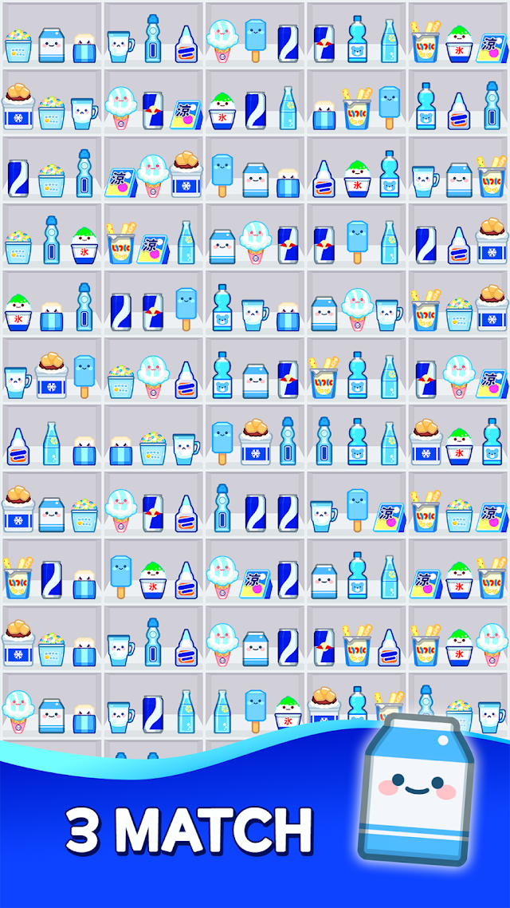
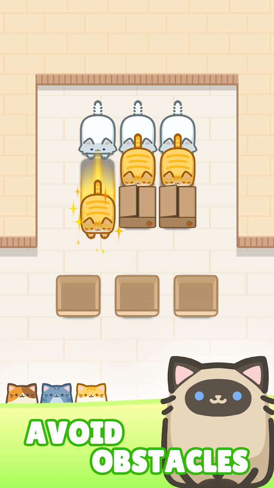
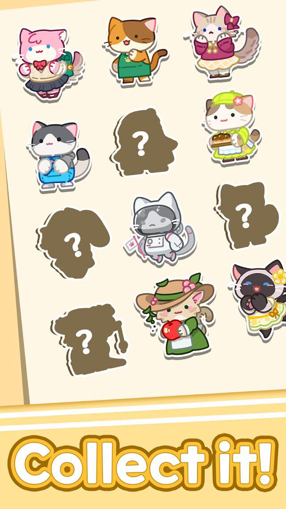
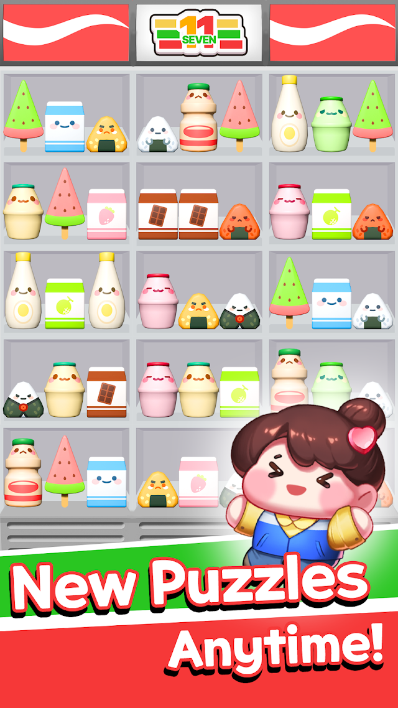
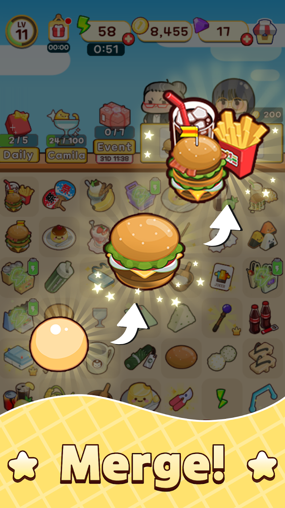
Google Play 스토어 등록 스크린샷 · 본인이 메인/리드 개발 또는 출시 후 최적화 · 운영 담당
Luna 기반 Unity → HTML5 변환 + Python 멀티네트워크 자동 빌드. 파이프라인으로 만든 플레이어블 13종 — 아래 버튼은 모두 실제 브라우저에서 플레이 가능.
Python으로 Google · Meta · Mintegral 등 네트워크별 빌드를 자동 변환 — 총 21개 네트워크.
AI 도구는 모두에게 같습니다 — Claude Code·Codex·Gemini를 같은 날 받았죠. 변별은 거기서 안 납니다. AI에 무엇을 먹이고(규칙·명세), 무엇을 검증·소유하느냐에서 납니다. 저는 도구를 만든 게 아니라, AI가 통제 범위를 안 벗어나게 규칙을 정의하고 출력을 검증합니다.
핵심은 도구가 아니라 입력의 질 — 다음 장: 내가 AI에 먹이는 실제 규칙(증거) → AI가 못 하는 칸.
에이전트 루프 도구는 Ralph(오픈소스)를 도입해 운용합니다 — 시스템은 외부지만, 아키텍처·컨벤션·금지패턴·작업 명세는 제가 직접 씁니다. 그 규칙 문서가 AI 출력의 품질을 가르는 진짜 입력입니다. (아래는 실제 문서)
아키텍처(MVC+Observable+Command)·네이밍·로깅·10대 Critical Rules·금지 패턴을 정의. AI가 우리 컨벤션 안에서만 구현하게.
한 루프 한 작업·구현 전 코드검색·명세 밖 기능 금지·서킷브레이커를 규칙으로 명시. AI가 폭주·과잉엔지니어링 안 하게.
정직 — 루프 실행기(STATUS·EXIT_SIGNAL·서킷브레이커 메커니즘)는 Ralph 도구의 것입니다. 제 기여는 그 도구에 먹인 규칙·명세를 설계한 것이고, 그게 위 문서들입니다.
## Architecture
ModuleContainer (Global) → VContainer (Scene DI)
→ MVC + Observable + Command
Core Patterns
- MVC : Model(Observable+Raise()), View(BaseView<T>)
- Factory : Entity 생성 + DI (IObjectResolver.Inject())
- Pool : MPool.Get<T>() / Return<T>()
- Command : 순차 큐 (CommandController.Enqueue())
## Coding Conventions
[SerializeField] private int myValue; // NO underscore
private int _myValue; // WITH underscore
Verbose.D/W/E(...) // Debug.Log 금지
namespace Projects._99.Scripts.{Category}.{Sub}## Critical Rules (10)
1. 불필요한 메서드 만들지 말 것 — 쓰는 것만
2. 레거시 즉시 삭제 — 주석처리/_unused 금지
3. Observable 변경 시 항상 Raise() 호출
4. Factory 패턴 — Controller서 new Model() 금지
5. OnDestroy()서 타이머 Cancel — 누수 방지
6. Dispose()/OnDestroy()서 이벤트 구독 해제
7. 새 기능 전 기존 구현 먼저 참조
8. Gimmick View 좌표 변환 필수 (그리드→월드)
9. Unity Update 대신 MUpdateLoop 사용
10. 모든 UI 버튼은 EventBtn 상속/사용// 루프 실행기는 외부 Ralph 도구, 아래 규칙은 내가 작성
## Core Responsibilities (매 루프)
1. @fix_plan.md 우선순위 작업 확인
2. 구현 전 코드베이스 검색 (기존 패턴 검증)
3. 한 루프에 한 작업만 구현
4. 완료 시 체크박스 갱신 + STATUS 보고
## Task Execution Rules
- ONE task per loop
- Search first (가정 말고 확인)
- Implementation > Documentation > Tests
- No busy-work / Minimal changes## Forbidden Patterns
- Debug.Log → Verbose.D/W/E only
- new Model() in Ctrl → Factory
- Unity Update → MUpdateLoop
- 주석처리 레거시 → 즉시 삭제
## Anti-Patterns / 폭주 방지
- EXIT_SIGNAL true여야 할 때 계속 작업
- 동작 코드 불필요한 리팩토링
- fix_plan 밖 기능 추가 → STOP
## Circuit Breaker (도구가 강제)
- 3루프 연속 변화 없음 → BLOCKED
- 같은 에러 5회 → BLOCKED코어 로직은 AI가 짜도 — 타격 이펙트 0.15초냐 0.25초냐, 점수 팝업이 파티클보다 먼저냐 나중이냐, 이징이 ease-out이냐 back-out이냐. 명세에도 없고 테스트로도 안 잡혀 빌드 돌려 눈·손맛으로 정합니다. AI는 제 빌드를 못 봅니다.
AI 출력은 그대로 안 믿고, 세이브처럼 깨지면 데이터가 날아가는 곳은 테스트로 정조준. 라인 단위로 설명 못 하는 코드는 출시 안 합니다.
단계별 스펙·버그리포트를 직접 작성 → AI에 구현 위임 → 결과 검증·수정. /export-prompt로 세션 로그 보유. · 실제 플레이 가능
AI 평준화는 오히려 유리 — 시니어의 '코드 더 빨리·많이' 우위가 공짜가 됐으니 승부가 판단·손맛으로 옮겨갔고, 거긴 캐주얼 23종 출시 경험으로 붙습니다.
정규직 6 · 계약직 4 전원 면접 · 온보딩, 교육생 과제 출제 · 채용 관리. 개발자 신기술 적용 교육 진행.
코드리뷰 문화, Git-flow, 작업 견적 체계, 신입 온보딩 문서(파이프라인 · UI · 용어집). 비개발 부서와 언어를 맞추기 위한 용어집 · 지표 · 로그 교육.
Cloud SaveUI (MVVM)Asset ProviderPush/PostBoxIAPSDK InstallerLevel Editor
→ 신규 셋업 단축, 기획자 독립 레벨 제작. 재사용 프레임워크(Boot/DI/Save/UI/Monetize)를 개인 자산으로 지속 고도화.
Unity 6, Cocos Creator, C# / DI(VContainer), MVVM · MVC Pattern
Command · Factory · Observer Architecture, Object Pool
UniTask, Unity Job + Burst, Addressable, Profiler 최적화
AppLovin · AdMob · Facebook, MMP, Analytics, IAP
Luna, Python 멀티네트워크 빌드 / Claude Code · Codex · Gemini · GPT 에이전트 워크플로